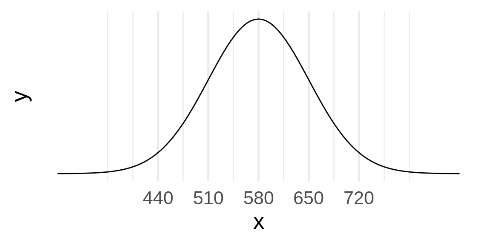
18: The Normal Distribution
Stat120 | Fall 2025
Prof Amanda Luby
Today
- Revisiting sampling/bootstrap/null distributions
- The Normal Distribution
- Practice in StatKey and R
Revisiting
We’ve already covered the 3 main pieces of intro stats:
- Exploratory Data Analysis: Summarizing data with numbers and graphs
- Estimation: Using confidence intervals to estimate parameters with uncertainty
- Testing: Using p-values to evaluate competing hypotheses
Inference
Confidence intervals and Hypothesis Testing are two ways that we can do inference: learning about population parameters with sample statistics.
Up until now, we’ve relied on computer simulations (via StatKey or R) to generate bootstrap or null distributions.
We’re going to begin using probability models to generate these distributions instead.
Examples of distributions we’ve seen so far
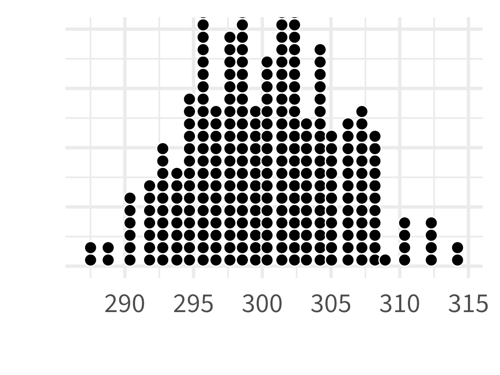
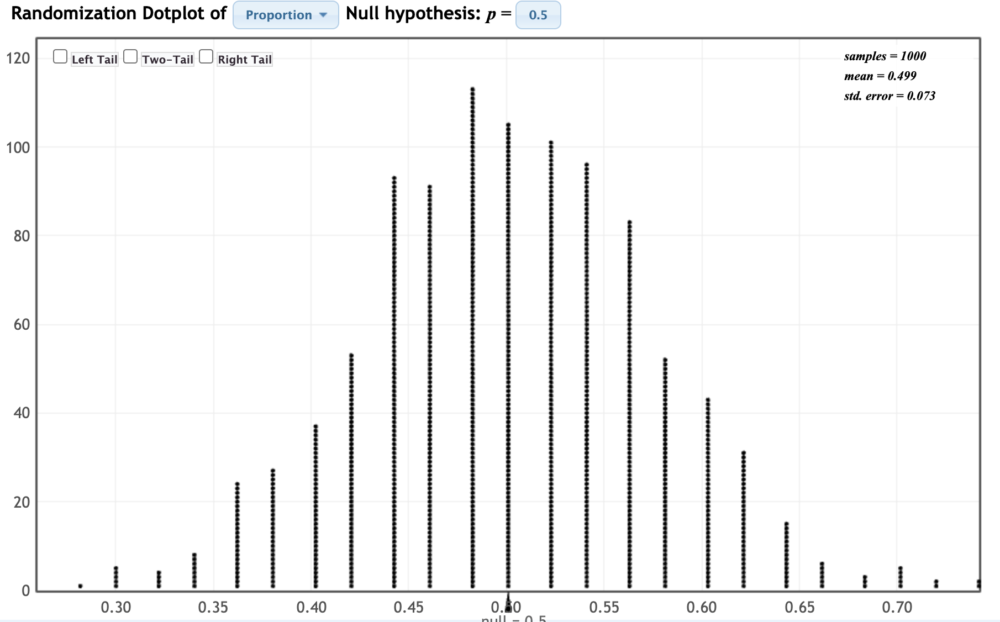
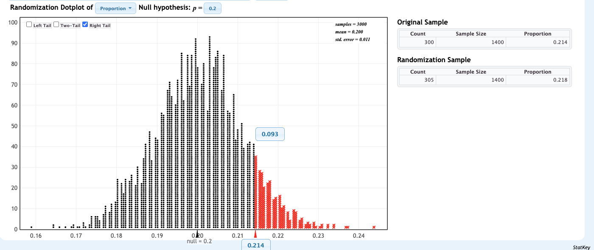
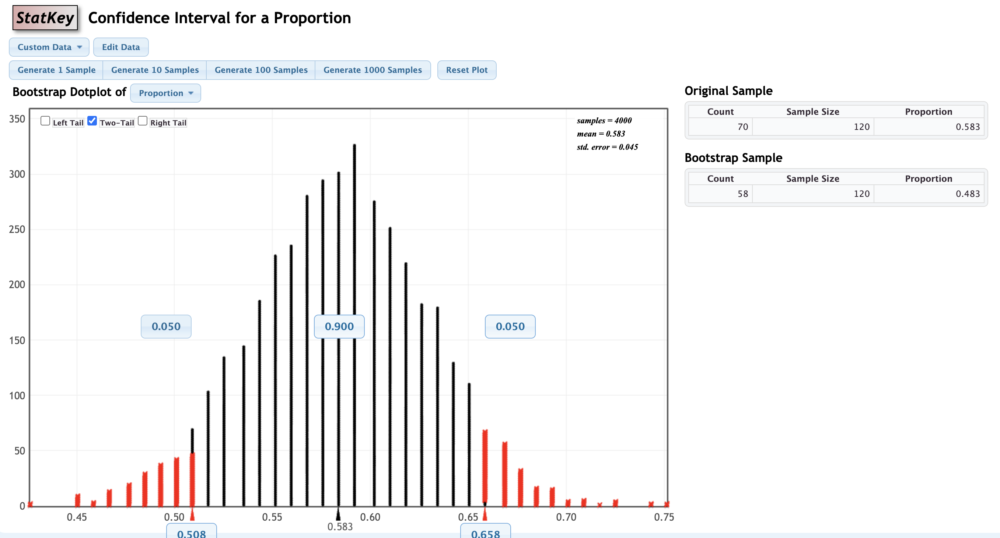
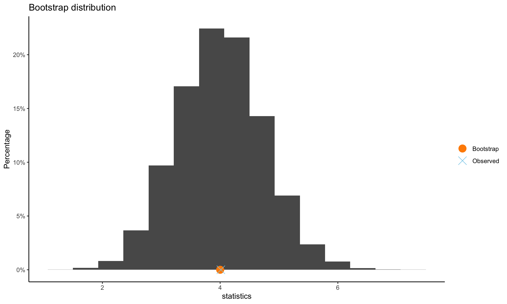
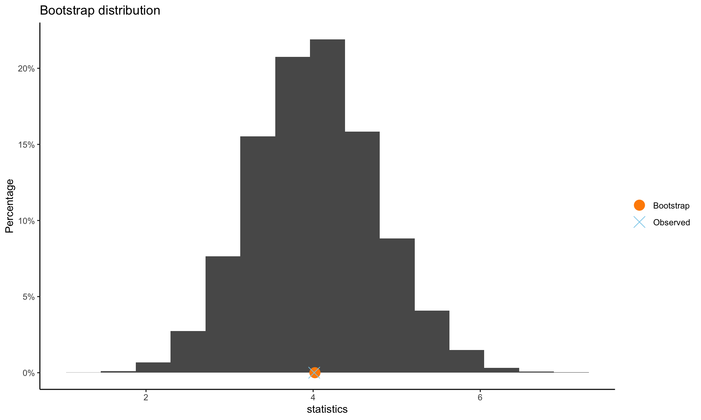
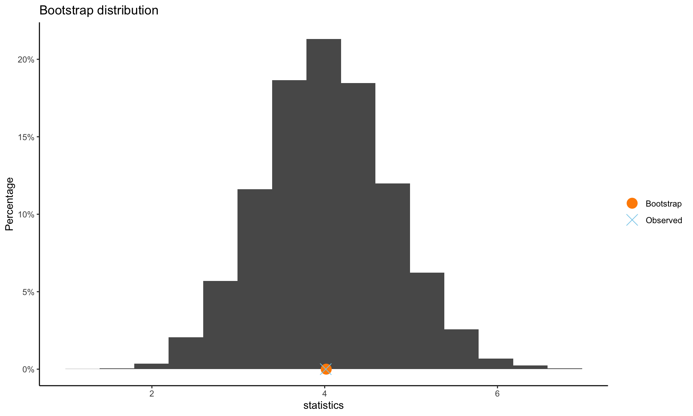
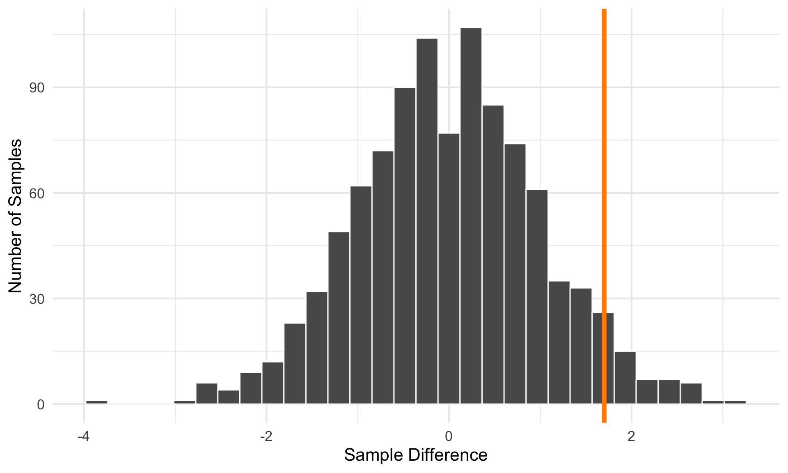

ESP example
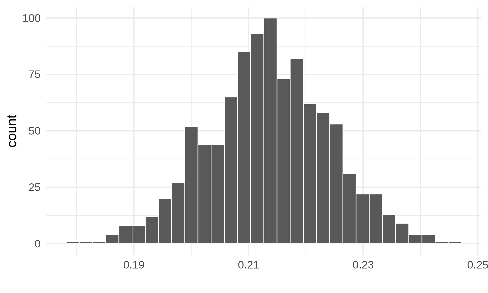Turns out, we can draw curves with math!!
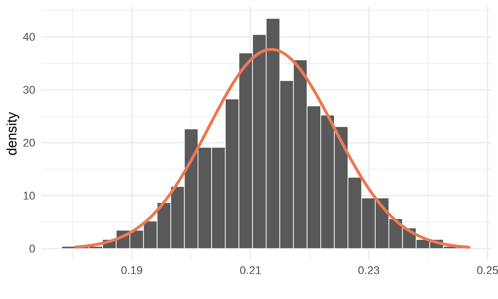Some details…
This is called a density function (note the y-axis is no longer ‘count’!)
\[\text{density} = \frac{1}{\sqrt{2\pi\sigma}} e^{-\frac{1}{2\sigma^2}(x - \mu)^2}\]
Notation: we write \(X \sim N(\mu, \sigma)\)
The area under the curve is equal to 1, and we can find probabilities by finding the appropriate area under the curve
Example 1
Verbal SAT scores follow a normal distribution with a population mean of \(\mu = 580\) and population standard deviation \(\sigma = 70\). What proportion of test-takers score above 650?
- Sketch the normal model with at least 3 x-axis ticks labelled
Example 1
Verbal SAT scores follow a normal distribution with a population mean of \(\mu = 580\) and population standard deviation \(\sigma = 70\). What proportion of test-takers score above 650?
- Shade the area that corresponds to the probability we want to calculate
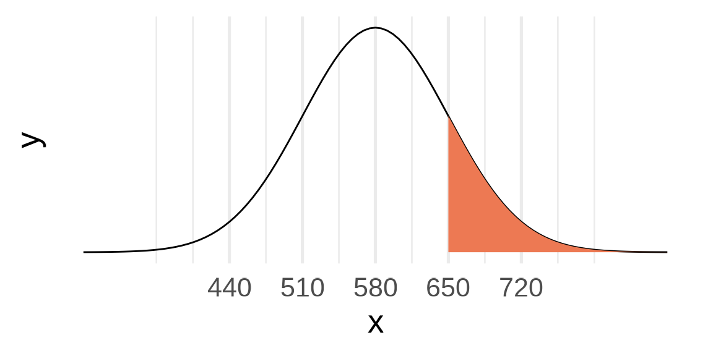
Example 1
Find the probability: . . .
- Option 1: Calculus \[\int_{650}^\infty\frac{1}{\sqrt{2\pi\sigma}} e^{-\frac{1}{2\sigma^2}(x - \mu)^2}\]
(not a real option)
Example 1
- Find the probability:
- Option 2: StatKey
- Theoretical Distribution –> Normal
- “Edit Parameters” and input mean and SD
- Check “right tail” and change the x-axis value to 650
Example 1
- Find the probability:
- Option 3: R
> pnorm(650, mean = 580, sd = 70, lower.tail = FALSE)[1] 0.158655
Example 2
What is the SAT score for the 90th percentile?
- What does this correspond to on the sketch of the normal distribution?
Example 2
- What does this correspond to on the sketch of the normal distribution?
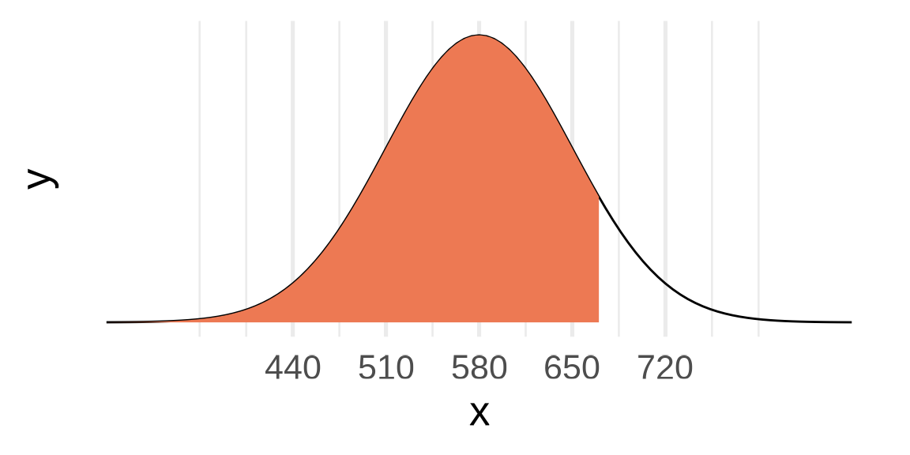
To find the percentile:
- Option 1: StatKey
- Theoretical Distribution –> Normal
- “Edit Parameters” and input mean and SD
- Check “right tail” and change the probability value to .1
- Option 2: R
> qnorm(.9, mean = 580, sd = 70, lower.tail = TRUE)[1] 669.708
Connection to z-scores
Z-scores
Recall:
\[ z = \frac{x - \mu}{\sigma}\]
z-scores measure the number of standard deviations away from the mean that a data point is.
Standard Normal Model
This means that all normal probability models can be transformed to the z-score space. We call this the standard normal model
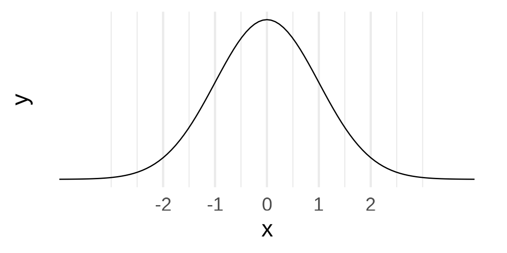
Standard Normal Model: \(Z \sim N(\mu = 0, \sigma = 1)\)
Back to the SAT Example 1
Verbal SAT scores follow a normal distribution with a population mean of \(\mu = 580\) and population standard deviation \(\sigma = 70\). What proportion of test-takers score above 650?
- Find the z-score
\[ \frac{650 - 580}{70} = 1\]
- Use StatKey or
pnorm
Central Limit Theorem
Why did our bootstrap and null distributions look normal?
Central Limit Theorem:
For random samples, if \(n\) is big enough, the sampling distribution of \(\bar{x}\) is approximately normal, regardless of what the shape of the population distribution is.
CLT
This gives us a “shortcut” for estimation and testing that uses the Normal Distribution. Instead of simulating 1000 samples with the bootstrap or a permutation test, we can assume \[ \bar{X} \sim N(\mu_0, SE)\] when doing testing, and
\[ \bar{X} \sim N(\bar{X}, SE)\] when making confidence intervals.
Why is this a shortcut?
Instead of using StatKey, boot() or permTest(), we can use z-scores to find margin of errors for confidence intervals:
\[\bar{x} \pm z^* \times SE\]
where \(z^*\) can be found with qnorm() based on the appropriate confidence level
And we can use pnorm() to find p-values based on our test statistic
Looking forward:
How do we find the SE?